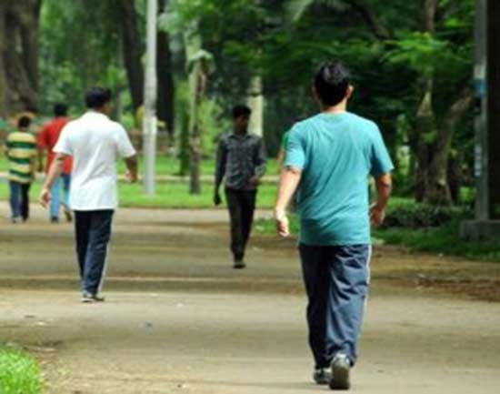

साइनस होने पर ऐसे करें घरेलू उपाय, मिलेगी आराम
साइनस एक ऐसी समस्या है जिसे पूरी तरह से ठीक नहीं किया जा सकता है। सर्दी के मौसम में साइनस की समस्या और ज्यादा तकलीफ देने लगती है। साइनस होने पर आप कुछ ऐहतियाती कदम उठाकर घर पर सही उपचार करके इससे राहत पा सकते है। साइनस के इलाज के लिए कुछ प्रभावी घरेलू उपचार इस प्रकार हैं-
भाप लें- गुनगुने पानी में यूकेलिप्टस तेल की कुछ बूंदें मिला सकते हैं। साइनस के लक्षणों से राहत पाने के लिए इसकी भांप ले सकते हैं। थोड़ी-थोड़ी देर में भाप लेने से नाक को राहत मिलती है।
सिंकाई करें नमक से
यदि सर्दियों में हाथ पैर में होने वाली सूजन और जलन से बचने के लिए गर्म पानी में सेंधा नमक मिलाकर 10 से 15 मिनट के लिए पैर इसमें रखें। इससे शरीर में मैगनीशियम की पूर्ति होती है और पैर को ड्राइनेस से बचाता है।
जैतून का तेल- नाक और आंखों के चारों ओर जैतून का तेल लगाएं। यह नाक बंद में आपको आराम देगा और साफ करने में भी मदद करेगा। इससे साइनस में आराम मिलेगा और सांस लेने में राहत मिलेगी।
हल्दी अदरक की चाय- हल्दी और अदरक की जड़ से बनी चाय का सेवन करें। हल्दी में कई औषधीय गुण होते हैं और इसमें मौजूद तत्व इसे जलनिरोधी भी बनाते हैं। अदरक की जड़ें नाक को खोलने में मदद करती हैं।
तिल का तेल- तिल का तेल साइनस में बहुत ही उपयोगी साबित होता है। तेल को नाक में डालने से राहत मिलती है। सांस लेने में आसानी होती है।
सेब का सिरका- 2 चम्मच सेब के सिरके को आधा कप गुनगुने पानी में मिलाएं। इसमें एक चम्मच शहद भी मिलाएं। इस मिश्रण को गुनगुना रहते हुए पी लें। इससे साइनस में काफी आराम मिलेगा।
काला जीरा- सांस संबंधी समस्याओं में आराम पाने के लिए काले जीरे के बीज लें और उन्हें एक पतले कपड़े में बांधकर सूघेंगे। इस उपाय से साइनस में तुरंत राहत मिलती है।

स्वस्थ्य रहना है तो पैदल चलें
भारत की प्रमुख स्टैंडएलोन स्वास्थ्य बीमा कम्पनियों में एक मैक्स बूपा ने फेफड़ा और ईएनटी विशेषज्ञों समेत लगभग 40 डॉक्टरों का एक सर्वे किया जिसका उद्देश्य यह जानना था कि दिल्ली/एनसीआर में प्रदूषण के मौजूदा हालात को देखते हुए दिल्ली वासी स्वस्थ रहने के लिए क्या कदम उठाएं। सर्वे में दिल्ली वासियों के लिए पैदल चलने को सबसे सही व्यायाम माना गया। हवा की गुणवत्ता में लगातार गिरावट के मद्देनजर जॉगिंग करने, दौड़ने और साइक्लिंग की तुलना में पैदल चलने को बेहतर व्यायाम बताया गया। सर्वे किए गए 83 प्रतिशत डॉक्टरों ने बाहर हवा की गुणवत्ता में गिरावट के दुष्परिणामों से बचने के लिए हर दिन पैदल चलने की सलाह दी।
‘‘हमारा मकसद ग्राहकों को बेहतर स्वास्थ्य और सुखी जीवन देने में सहायक होना है। लेकिन आज हर उम्र के लोगों के स्वास्थ्य पर भयानक प्रदूषण का खतरा है। हम अपने कर्मचारियों, ग्राहकों और सोशल मीडिया पर अपने फॉलोअरों को प्रदूषण के दुष्परिणामों से बचाने के लिए ‘लेट्स ब्रीद बेटर टुगेदर’ कैम्पेन भी शुरू किया है। इसके माध्यम से हम लोगों को प्रदूषण के दुष्परिणामों से बचने और स्वस्थ रहने के बारे में सुझाव देते हैं। हम ने पल्मोनोलॉजिस्ट और ईएनटी एक्सपर्ट का एक सर्वे भी किया ताकि मौजूदा हालात में स्वस्थ रहने के लिए संपूर्ण चिकित्सा जगत का दृष्टिकोण सामने आए। लगभग 83 प्रतिशत डॉक्टरों ने हर दिन लगभग 30 मिनट पैदल चलने की सलाह दी। सीमित और लंबी अवधि में नियमित पैदल चलने का सुझाव देते हुए स्वास्थ्य संबंधी इसके कई लाभ बताए।